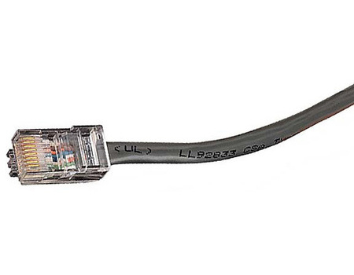

This post is adapted from some homework I received at the University of Tokyo (the original question was "Why is the Internet cheap?").
The word “cheap” has three main understandings: (1) low and/or reduced in price; (2) of poor quality; (3) of little worth. In the present question, the intended meaning is of course (1). Let us remark at the same time how this definition is relative: “reduced in price” implies two levels, the one before and the one after reduction; similarly, “low” implies the existence of a “high” reference. In what follows, we will try to select a suitable reference every time we using the word “cheap”.
So, is the Internet cheap? And for whom? To answer this question, it seems we need to define who is paying and for what service. As we have seen in the previous section, there are different groups of persons, physical or moral, subsidizing the Internet. We can split them into two groups: last-mile customers and ISPs. Last-mile customers pay for connectivity, that is, the ability to exchange data with any other machine connected to the Internet and willing to do so. Meanwhile, as we have noted before, ISPs pay for bandwidth. Competition between ISPs in the bandwidth market is significant and the question of the “value” of bandwidth is still being decided by this ongoing process. We will not go into this discussion further, and rather focus on the former group of Internet users.
Is the Internet cheap for last-mile customers? If the reference is the running cost of network infrastructure for ISPs, it turns out the Internet is sometimes quite expensive. For instance, until September 2002, the average monthly fee for a DSL connection in France was around 50 euros (ca. $70 using today's exchange rate) due to an officious agreement between the three major ISPs of that time. This phenomenon resulted in a slow deployment of DSL until a new ISP (Proxad SA) entered the market with a lowered monthly fee of 30 euros.
Still, assuming the market works efficiently, is the Internet cheap for last-mile customers? If the reference is the cost per byte uploaded, then the Sneakernet is cheaper. Using the Skeakernet means transferring one's data on a high-capacity hard drive directly connected to the machine, then sending this hard drive by express mail. According to this post from Jeff Atwood, in the USA, the cost per gigabyte uploaded using the Sneakernet is $0.06, versus $0.42 for Premium DSL or $0.54 for Premium Cable service. In that sense, the Internet is not cheap. (We should note here that the common use of the network by customers is in the download direction, in which all three options revolve around the same per-gigabyte cost of $0.05.)
From the previous discussion, it appears difficult to judge of the cheapness of the Internet with respect to an objective criterion. Rather, as customers, we can feel that “the Internet is cheap” when the price we pay is below our willingness to pay. This economic criterion is the ideal value we ought to compare Internet prices to, therefore rephrasing the question as: how much are customers willing to pay for Internet access?
To the best of our knowledge, no scientific study has been published yet regarding Internet users willingness to pay. We can, however, draw some insights by looking at the penetration rate of Internet access on a per country basis (this rate is defined as the fraction of the population accessing the Internet from private devices). For example, France and Italy have a similar population count (ca. 60 million citizens) and GDP (ca. $2 trillion), yet the penetration rate in France is 83% while that of Italy is only 58% (cf. List of countries by number of Internet users on Wikipedia). In this case, we can state that the Internet is cheaper in France than in Italy. Still, despite the Internet being a global network, countries worldwide show a lot of variety in population or GDP, which makes general statements on the cheapness of the Internet out of our reach.
Let us summarize our point. Among the various groups of Internet subsidizers, we chose to focus on last-mile private customers. From their point of view, we tried to define an objective criterion on which to judge whether the Internet is cheap or not. We came to the conclusion that the relevant criterion is that of willingness to pay, while noting that it varies greatly from one country to the other. As a consequence, we believe that it is not possible to state globally whether the Internet is cheap or not. It is however possible to draw some partial conclusions by comparing Internet penetration on a country-to-country basis, taking into account other relevant factors such as population and GDP.

Discussion ¶
Feel free to post a comment by e-mail using the form below. Your e-mail address will not be disclosed.